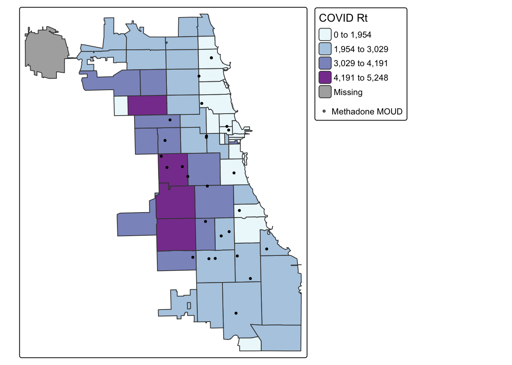
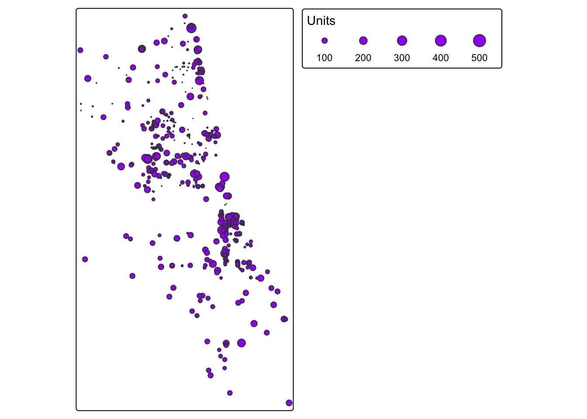
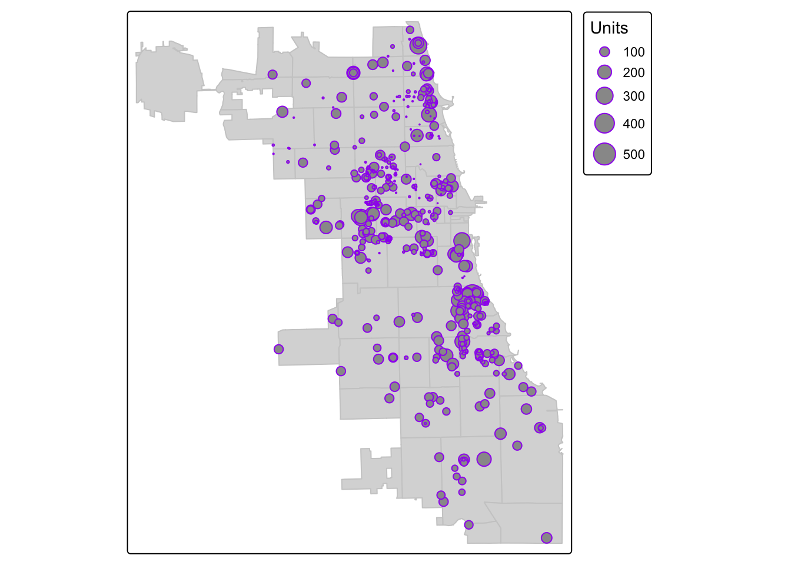
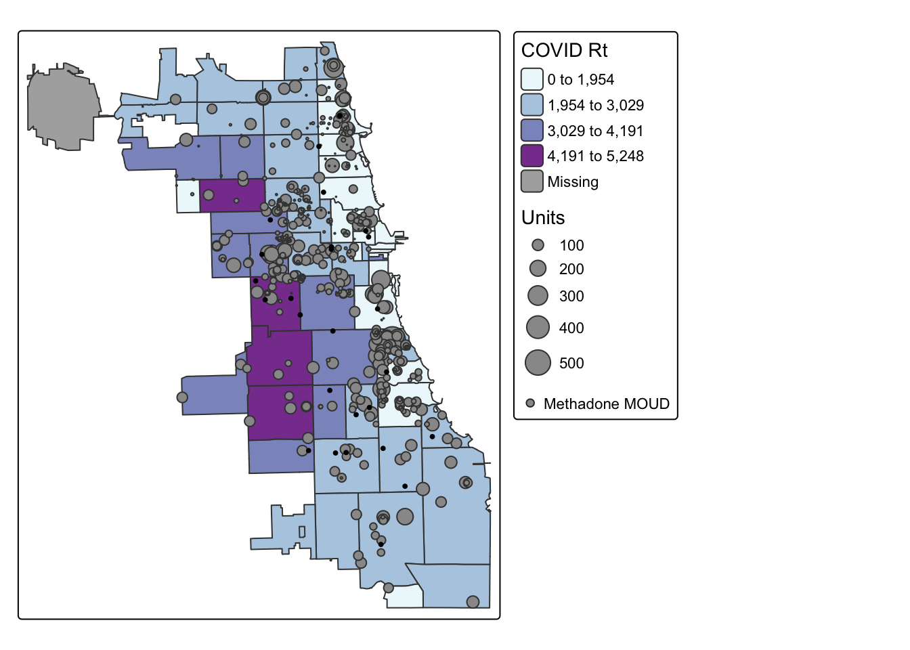

3 Adding Resources
In addition to areal data, we can also extract information from individual locations. Locations, when measured as points, can include things like:
- Health providers: Hospitals, Clinics, Pharmacies, Mental health providers, Medication for opioid use disorder providers
- Area resources: Grocery stores & Supermarkets, Playgrounds, Daycare centers, Schools, Community centers
- Area challenges: Crime, Superfund sites, Pollution-emitting facilities
Points can also represent people, like individual patients residing in an area. Because individual locations for persons is protected health information, we’ll focus on point data as resources in the chapter. However, you can reuse the code snippets in this workshop to wrangle patient-level data the same way in a secure environment, under the guidance of your friendly IRB ethics board.
In this example, we’ll extend our Chicago example. We’ll identify areas with high COVID rates, low geographic access to methadone maintenance therapy, and less access to affordable rental housing units managed by the city. We are interested in locating zip codes that may be especially vulnerable to persons with opioid use disorder who use MOUDs. (This is oversimplified, but our example to work with.)
3.1 Geocode
If you start with only addresses, you’ll need to geocode. Our methadone maintenance provider dataset is only available as such. Addresses are comprised of characeters that reference a specific place. We will use the network topology service of a Geocoder to translate that address to a coordinate in some CRS.
First we load the tidygeocoder to get our geocoding done. Note, this uses the interent to process, so is not suitable for HIPPA protected data like individual, living person addresses. For offline geocoders, check out Pelias or ESRI.
Let’s read in and inspect data for methadone maintenance providers. Note, these addresses were made available by SAMSHA, and are known as publicly available information. An additional analysis could call each service to check on access to medication during COVID in Septmber 2020, and the list would be updated further.
## X Name Address City State
## 1 1 Chicago Treatment and Counseling Center, Inc. 4453 North Broadway st. Chicago IL
## 2 2 Sundace Methadone Treatment Center, LLC 4545 North Broadway St. Chicago IL
## 3 3 Soft Landing Interventions/DBA Symetria Recovery of Lakeview 3934 N. Lincoln Ave. Chicago IL
## 4 4 PDSSC - Chicago, Inc. 2260 N. Elston Ave. Chicago IL
## 5 5 Center for Addictive Problems, Inc. 609 N. Wells St. Chicago IL
## 6 6 Family Guidance Centers, Inc. 310 W. Chicago Ave. Chicago IL
## Zip
## 1 60640
## 2 60640
## 3 60613
## 4 60614
## 5 60654
## 6 60654Let’s geocode one address first, just to make sure our system is working. We’ll use the “cascade” method which use the US Census and OpenStreetMap geocoders. These two services are the main options with tidygeocoder.
## Passing 1 address to the Nominatim single address geocoder## Query completed in: 1 seconds## # A tibble: 1 × 3
## address latitude longitude
## <chr> <dbl> <dbl>
## 1 2260 N. Elston Ave. Chicago, IL 41.9 -87.7As we prepare for geocoding, check out the structure of the dataset. Do we need to change anything? The data should be a character to be read properly.
## 'data.frame': 27 obs. of 6 variables:
## $ X : int 1 2 3 4 5 6 7 8 9 10 ...
## $ Name : chr "Chicago Treatment and Counseling Center, Inc." "Sundace Methadone Treatment Center, LLC" "Soft Landing Interventions/DBA Symetria Recovery of Lakeview" "PDSSC - Chicago, Inc." ...
## $ Address: chr "4453 North Broadway st." "4545 North Broadway St." "3934 N. Lincoln Ave." "2260 N. Elston Ave." ...
## $ City : chr "Chicago" "Chicago" "Chicago" "Chicago" ...
## $ State : chr "IL" "IL" "IL" "IL" ...
## $ Zip : int 60640 60640 60613 60614 60654 60654 60651 60607 60607 60616 ...We need to clean the data a bit. We’ll add a new column for a full address, as required by the geocoding service. When you use a geocoding service, be sure to read the documentation and understand how the data needs to be formatted for input.
methadoneClinics$fullAdd <- paste(as.character(methadoneClinics$Address),
as.character(methadoneClinics$City),
as.character(methadoneClinics$State),
as.character(methadoneClinics$Zip))We’re ready to go! Batch geocode with one function, and inspect:
geoCodedClinics <- geocode(methadoneClinics,
address = 'fullAdd', lat = latitude, long = longitude, method="osm")## Passing 27 addresses to the Nominatim single address geocoder## Query completed in: 29.6 seconds## # A tibble: 6 × 9
## X Name Address City State Zip fullAdd latitude longitude
## <int> <chr> <chr> <chr> <chr> <int> <chr> <dbl> <dbl>
## 1 1 Chicago Treatment and Counseling Center, In… 4453 N… Chic… IL 60640 4453 N… 42.0 -87.7
## 2 2 Sundace Methadone Treatment Center, LLC 4545 N… Chic… IL 60640 4545 N… 42.0 -87.7
## 3 3 Soft Landing Interventions/DBA Symetria Rec… 3934 N… Chic… IL 60613 3934 N… 42.0 -87.7
## 4 4 PDSSC - Chicago, Inc. 2260 N… Chic… IL 60614 2260 N… 41.9 -87.7
## 5 5 Center for Addictive Problems, Inc. 609 N.… Chic… IL 60654 609 N.… 41.9 -87.6
## 6 6 Family Guidance Centers, Inc. 310 W.… Chic… IL 60654 310 W.… 41.9 -87.6There were two that didn’t geocode correctly. You can inspect further. This could involve a quick check for spelling issues; or, searching the address and pulling the lat/long using Google Maps and inputting manually. Or, if we are concerned it’s a human or unknown error, we could omit. Sample code is shown below if any nulls were identified, and needed to be removed.
3.2 Convert to Spatial Data
This is not spatial data yet! To convert a static file to spatial data, we use the powerful st_as_sf function from sf. Indicate the x,y parameters (=longitude, latitude) and the coordinate reference system used. Our geocoding service used the standard EPSG:4326, so we input that here.
3.3 Basic Map of Points
For a really simple map of points – to ensure they were geocoded and converted to spatial data correctly, we use tmap. We’ll use the interactive version to view.
If your points didn’t plot correctly:
- Did you flip the longitude/latitude values?
- Did you input the correct CRS?
Those two issues are the most common errors.
3.4 Overlay Points & Style
Let’s add our zip code map from the previous module. First load the data, then overlay.
## Reading layer `ChiZipMaster' from data source
## `/Users/maryniakolak/Code/Spatial-Health-Workshop/data/ChiZipMaster.geojson' using driver `GeoJSON'
## Simple feature collection with 60 features and 31 fields (with 1 geometry empty)
## Geometry type: MULTIPOLYGON
## Dimension: XY
## Bounding box: xmin: -87.94011 ymin: 41.64454 xmax: -87.52414 ymax: 42.02304
## Geodetic CRS: WGS 84With this overlay, we’ll add a “hack” to include the methadone clinic points in a legend.
## ℹ tmap mode set to "plot".## 1st layer (gets plotted first)
tm_shape(Chi_Zipsf) +
tm_polygons(col="Case.Rate...Cumulative",
style="jenks",
palette="brewer.bu_pu",
n=4,
title = "COVID Rt") +
## 2nd layer (overlay)
tm_shape(methadoneSf) + tm_dots(size = 0.2, col = "gray20") +
## "Hack" a manual symbology for dots in the legend
tm_add_legend("symbol", col = "gray20", size = .2, labels = "Methadone MOUD") +
## Cartographic Styling
tm_layout(legend.outside = TRUE, legend.outside.position = "right")##
## ── tmap v3 code detected ────────────────────────────────────────────────────────────────────────────────
## [v3->v4] `tm_polygons()`: instead of `style = "jenks"`, use fill.scale = `tm_scale_intervals()`.
## ℹ Migrate the argument(s) 'style', 'n', 'palette' (rename to 'values') to 'tm_scale_intervals(<HERE>)'[v3->v4] `tm_polygons()`: migrate the argument(s) related to the legend of the visual variable `fill`
## namely 'title' to 'fill.legend = tm_legend(<HERE>)'
3.5 Integrate More Data
From here, we can integrate more data. Let’s try a different point dataset – Affordable Rental Housing Developments, as made available by the City of Chicago Data Portal. This could be interesting for a number of different reasons – maybe we hypothesize better outcomes are associated with better access to affordable housing options? Or, we hypothesize the opposite, that mean distance to more population dense housing locations is vulnerable to airborne disease?
For this example, we’ll think about this dataset as access to secure and affordable housing. Persons with lower incomes residing in places with fewer developments may be more vulnerable to housing insecurity -> impacts health.
## Community.Area.Name Community.Area.Number Property.Type Property.Name
## 1 Englewood 68 Veterans Hope Manor Village
## 2 Rogers Park 1 Senior Morse Senior Apts.
## 3 Uptown 3 ARO The Draper
## 4 Edgewater 77 Senior Pomeroy Apts.
## 5 Roseland 49 Supportive Housing Wentworth Commons
## 6 Humboldt Park 23 Multifamily Nelson Mandela Apts.
## Address Zip.Code Phone.Number Management.Company Units
## 1 5900-6100 S. Green/Peoria/Sangamon 60621 312-564-2393 Volunteers of America Illinois 36
## 2 6928 N. Wayne Ave. 60626 312-602-6207 Morse Urban Dev. 44
## 3 5050 N. Broadway 60640 312-818-1722 Flats LLC 35
## 4 5650 N. Kenmore Ave. 60660 773-275-7820 Habitat Company 198
## 5 11045 S. Wentworth Ave. 60628 773-568-7804 Mercy Housing Lakefront 50
## 6 607 N. Sawyer Ave. 60624 773-227-6332 Bickerdike Apts. 6
## X.Coordinate Y.Coordinate Latitude Longitude Location
## 1 NA NA NA NA
## 2 1165844 1946059 42.00757 -87.66517 (42.0075737709331, -87.6651711448293)
## 3 1167357 1933882 41.97413 -87.65996 (41.9741295261027, -87.6599553011627)
## 4 1168181 1937918 41.98519 -87.65681 (41.9851867755403, -87.656808676983)
## 5 1176951 1831516 41.69302 -87.62777 (41.6930159120977, -87.6277673462214)
## 6 1154640 1903912 41.89215 -87.70753 (41.8921534052465, -87.7075265659001)There were a few data points with odd inputs and null values. Remember, we can’t convert any null values to spatial coordinates. Again, in an ideal context, you would explore and understand what is happening, systematically. In our experiment, we’ll omit nulls.
Look at the structure of the object.
## 'data.frame': 487 obs. of 14 variables:
## $ Community.Area.Name : chr "Rogers Park" "Uptown" "Edgewater" "Roseland" ...
## $ Community.Area.Number: int 1 3 77 49 23 38 42 36 36 8 ...
## $ Property.Type : chr "Senior" "ARO" "Senior" "Supportive Housing" ...
## $ Property.Name : chr "Morse Senior Apts." "The Draper" "Pomeroy Apts." "Wentworth Commons" ...
## $ Address : chr "6928 N. Wayne Ave." "5050 N. Broadway" "5650 N. Kenmore Ave." "11045 S. Wentworth Ave." ...
## $ Zip.Code : int 60626 60640 60660 60628 60624 60653 60637 60653 60653 60622 ...
## $ Phone.Number : chr "312-602-6207" "312-818-1722" "773-275-7820" "773-568-7804" ...
## $ Management.Company : chr "Morse Urban Dev." "Flats LLC" "Habitat Company" "Mercy Housing Lakefront" ...
## $ Units : int 44 35 198 50 6 71 67 534 148 40 ...
## $ X.Coordinate : num 1165844 1167357 1168181 1176951 1154640 ...
## $ Y.Coordinate : num 1946059 1933882 1937918 1831516 1903912 ...
## $ Latitude : num 42 42 42 41.7 41.9 ...
## $ Longitude : num -87.7 -87.7 -87.7 -87.6 -87.7 ...
## $ Location : chr "(42.0075737709331, -87.6651711448293)" "(41.9741295261027, -87.6599553011627)" "(41.9851867755403, -87.656808676983)" "(41.6930159120977, -87.6277673462214)" ...
## - attr(*, "na.action")= 'omit' Named int 1
## ..- attr(*, "names")= chr "1"In this dataset, we can see coordinate information is already included – twice! You’re looking at 2 different types of coordinate systems. We’ll use “Longitude” and “Latitude” to represent X,Y and an ESPG of 4326. We’re guessing, and hopeful.
We can now map the data for a quick view – does this look like Chicago, hopefully?
## ## ── tmap v3 code detected ────────────────────────────────────────────────────────────────────────────────## [v3->v4] `tm_bubbles()`: instead of `style = "sd"`, use fill.scale = `tm_scale_intervals()`.
## ℹ Migrate the argument(s) 'style' to 'tm_scale_intervals(<HERE>)'
3.6 Graduated Symbology
Previously we mapped points as dots. We literally used the tm_dots() function to do so. Another option is changing the size of the point, according to some attribute of the data. In this dataset, we see an attribute field that gives us the total number of units per housing site. Let’s use a graduated symbology, with the tm_bubbles() function, to map these points. That way points with more units will be bigger, and not all places are weighted the same visually.
tm_shape(Chi_Zipsf) +
tm_polygons(col = "gray80") +
tm_shape(AffHousingSf) + tm_bubbles("Units", col = "purple") 
3.7 Style Final Map
Let’s pull what we learned in the last tutorial, and map everything at once. Which zip codes are the most vulnerable to persons with OUD during the pandemic in September 2020, based on the information we have here?
## Zip Code Choropleth Map
tm_shape(Chi_Zipsf) +
tm_polygons(col="Case.Rate...Cumulative",
style="jenks",
palette="brewer.bu_pu",
n=4,
title = "COVID Rt") +
## Affordable Housing Unit Locations
tm_shape(AffHousingSf) + tm_bubbles("Units") +
## Methadone MOUD
tm_shape(methadoneSf) + tm_dots(size = 0.2, col = "gray20") +
## Cartographic Styling
tm_add_legend("symbol",
col = "gray20", size = .4,
labels = "Methadone MOUD") +
tm_layout(legend.outside = TRUE, legend.outside.position = "right")
In RStudio, you could zoom into the plot you created to get a better view. Save as an image, or save as a webpage!
Save any data you need from this session.
Practice in Sweden
Identify a resource as a point dataset in Sweden. Then:
- Bring it into the workspace, and do any data wrangling necessary to ensure it is rendered as a spatial data format in the right CRS.
- Transform the CRS of the point dataset to the same CRS of the data you used prior, of DeSo boundaries in Sweden.
- Overlay the points on top of the DeSo areas, and make a pretty map.
Tip: you can “zoom” into the area of the points by plotting them first, or using the bbox parameter in the tm_shape function of your DeSo dataset.